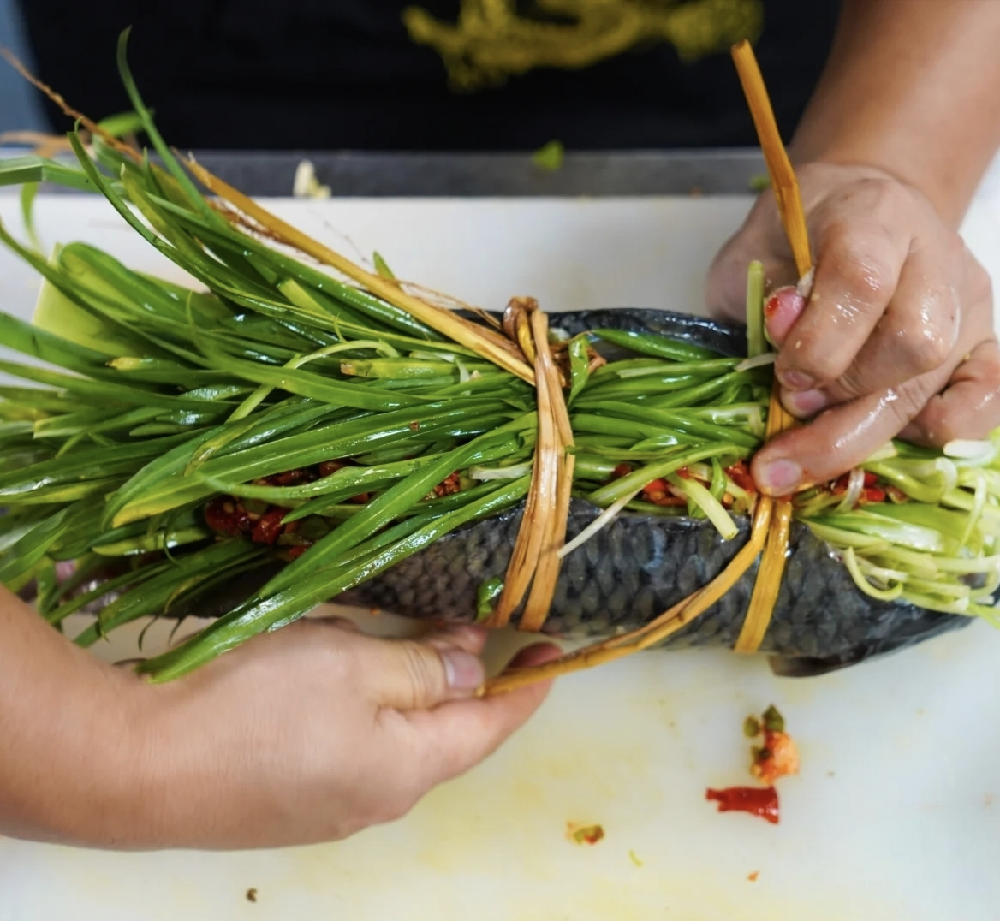
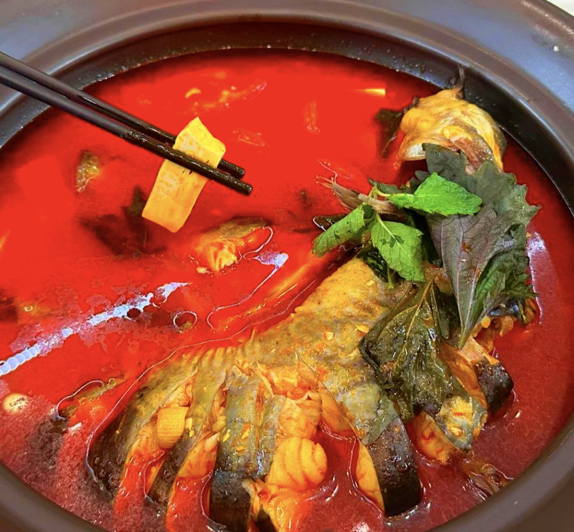
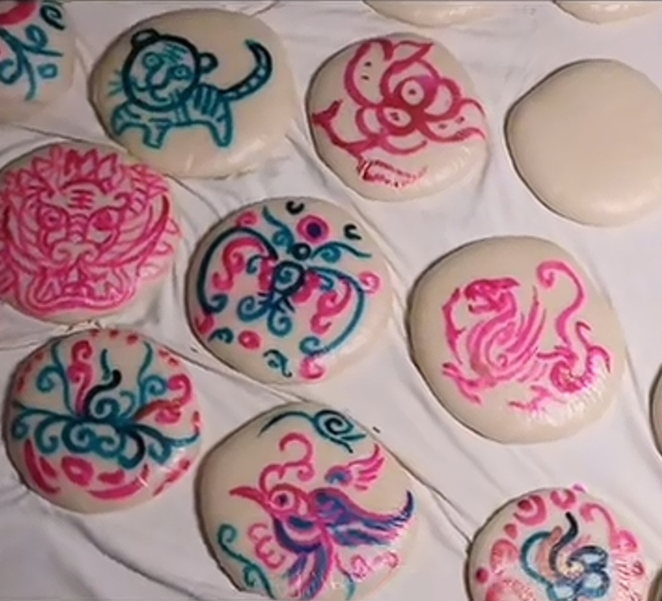
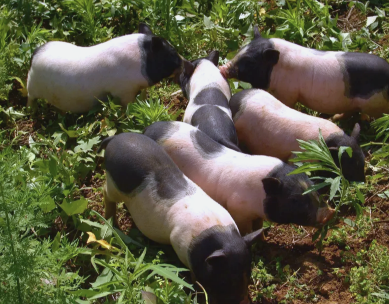
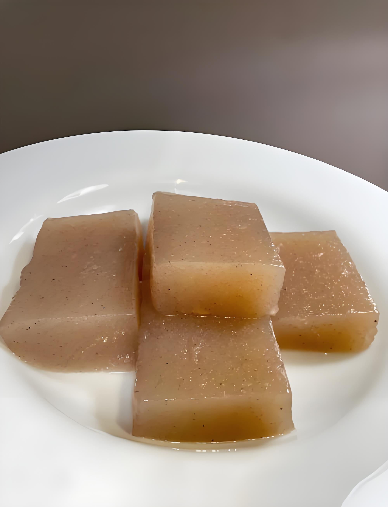
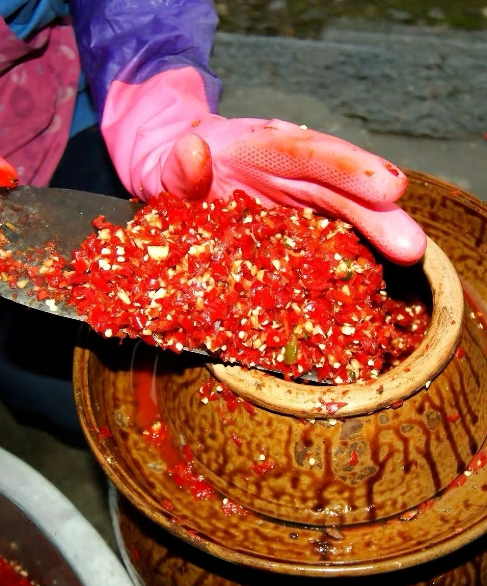

水乡秘境，灵绣三都，品味水族风情地道风味
三都是全国唯一的水族自治县，水族、苗族、布依族、汉族等各族群众世代共居，饮食文化交融共生。当地食材取自山水田间，风味以酸、鲜、香为主，一道道特色美食承载着千年民俗。平日里邻里互赠美食，节庆期间百家共享佳肴，美食成为各民族交往交流交融的温情纽带，让中华民族共同体意识融入烟火日常之中。

鱼包韭菜是水族头牌名菜，也是端节、卯节等重大节庆的必备佳肴，选用都柳江鲜活河鱼搭配韭菜蒸制而成，鱼肉鲜嫩、风味独特，承载着水族缅怀先祖的民俗寓意。每逢节日，各族邻里围坐共品这道美食，在分享美味中拉近情谊，成为节庆共庆、民族交融的生动写照。

水族酸汤鱼是当地经典风味美食，采用天然发酵酸汤，搭配稻田活鱼烹制，酸辣开胃、鲜香浓郁，深受各族群众喜爱。城乡社区、村寨常常举办美食品鉴活动，大家相互交流酸汤制作技艺，以美食为载体开展文化互学，不同民族的饮食智慧在此相互借鉴、共同传承。

糯米粑是西南多民族共爱的传统美食，藏着各族交往交融的温暖。贵州布依、苗、水、汉等民族聚居，糯米粑制作技艺在各族间互学互鉴。节庆共享、邻里互赠中，各族馅料搭配与烹饪技巧相融，风味愈发丰富地道。日常互送分享，节庆齐聚共品，这口香甜黏糯是民族情谊的见证，让共同体意识在团圆滋味中深深凝聚。

三都香猪是贵州省三都水族自治县特色地理标志畜禽品种，主产于巫不片区，体型小巧、肉质鲜香，是当地知名生态农特产品。三都境内水族、苗族、布依族、汉族等多个民族世代杂居，在长期生产生活中彼此交融，香猪的培育与发展也深深烙印着民族融合的印记。各族群众依山而居，共享山地养殖环境， 相互交流饲养、选种经验，结合本地山林资源与农耕习俗，逐步培育出耐粗饲、品质优良的小香猪品种。在饮食民俗里，烤香猪、香猪腊肉等美食，既是各族节庆待客的佳肴，也融合了不同民族的烹饪技艺。

魔芋豆腐是西南多民族共爱的传统美食，凝聚着各民族交往交流交融的智慧。贵州布依、苗、水、汉等民族相邻而居，魔芋豆腐制作技艺在各族间互学互鉴。从最初的民族特色吃食，到通过邻里结对、节庆共庆传播，布依族酸汤、苗族香料、水族技法与汉族烹饪融合，让其风味多元。日常里，各族家庭互赠魔芋豆腐、交流做法；节庆时，长桌宴上共享美味，在美食传递中拉近情谊。它是民族文化、技艺、情感交融的缩影，让共同体意识在烟火中扎根。

糟辣椒是西南多民族共嗜的调味灵魂，藏着各民族交往交流交融的烟火故事。在贵州，布依、苗、侗、汉等民族聚居之地，糟辣椒的制作是民族技艺互学的生动注脚。起初它是部分民族的特色调味，后经邻里结对、市集交流，制作手艺在各族间流转。苗族的辣度把控、布依族的发酵智慧、侗族的香料搭配与汉族的调味经验相互碰撞，让糟辣椒的风味愈发醇厚独特。